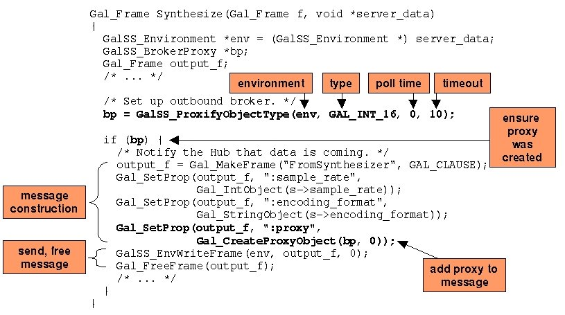

Galaxy Communicator Tutorial:
Setting Up a Brokered Audio Connection
Up to this point, all the communication between servers has been mediated
by the Hub. This arrangement has its advantages: for instance, the Hub provides
a central location for flow of control and routing. However, it also has
its disadvantages: in order for a message to get from one server to another,
it has to be decoded, analyzed, and reconstructed in the Hub. While this process
appears to be quite efficient, there are circumstances in which you might
prefer to send data directly: for example, in situations involving high bandwidth
or streaming, such as audio input or output.
To support this alternative, the Galaxy Communicator infrastructure supports
a peer-to-peer connection called a broker. The Hub mediates the establishment
of this connection, but all data which flows through the connection goes
directly from server to server. In this lesson, we'll learn how to set up
a broker connection and how it works.
Once you feel comfortable with this lesson, you can consult the broker reference documentation.
Recognizer, Synthesizer
and Audio
Up to this point, we've examined four servers in the toy travel demo:
the Parser, Backend and Generator servers, which represent the simplest type
of server, and the Dialogue server, which represents the next level of complexity.
The first three servers simply send responses to dispatch functions, while
the Dialogue server sends new messages to the Hub and occasionally waits
for the response. The last three servers take advantage of all these tools,
and furthermore interact with each other via broker connections.
In addition, the Audio server also exhibits the complexities of UI programming,
which we'll explore in the next lesson.
Brokering in four steps
The setup and operation of brokers can be broken down into four steps.
We'll describe and illustrate these steps briefly, and then look at some
code. We'll focus on the interaction between the Synthesizer and Audio servers
as an example.
Step 1: Establish
the broker listener
In the first step, the server which will be the source of the broker
data establishes a listener for the broker. This listener, in most cases,
is the same listener that's listening for connections from the Hub; the
protocol is constructed so that the listener can distinguish between the
two types of connections. The server assigns each broker a unique ID, so
that the server can listen for multiple brokers simultaneously. The server
also assigns each broker a timeout; it will accept multiple connections
for the broker, until the timeout is reached.
Step 2: Notify the Hub
and client
In the second step, the source server sends a new message to the Hub
which contains the broker contact information. This information consists
of the host, port, datatype and unique ID associated with this particular
broker, and is encapsulated in an object called a broker proxy. The
message which contains the proxy is a message like any other, and can contain
additional information (such as encoding format and sample rate for audio).
Step
3: Establish the broker connection, transmit data
When the target server receives this information, it establishes a connection
to the source server using information in the proxy, and establishes a callback
to receive the data. The source server can now send data over the connection,
and the callback will be invoked in the target server whenever data is received.
Step 4:
Process data, shut down broker listener
Finally, when the source server is done sending data, it notifies the
target server that it's done, and the broker connection is terminated. The
target server does whatever it wants to do with the data (e.g., send audio
to the audio device). When the source server's broker reaches its timeout,
it stops accepting connections for that broker; when all the connections
for the broker are done, the source server shuts down the broker.
Now that we've seen these steps in the abstract, let's take a look at
each one of them in detail.
Brokering details
Source server:
broker setup, message dispatch
In the first and second brokering steps, the source server sets up a
broker listener and sends a message to the Hub announcing the broker. Here's
how that happens.

There's more than one way to do this, but in this particular case, we
use the function GalSS_ProxifyObjectType.
This function creates the broker listener, and wraps a proxy around it. The
first argument of this function is the call environment. The connection this
call environment contains, and the server it's associated with, will host
the broker and its listener. The second argument is the type of data we'll
send across this broker connection; in this case, it's arrays of 16-bit integers.
The next argument is how often (or whether) to allow the toplevel Communicator
loop to poll this broker to see if there's anything to do; 0 means use the
default poll value. The fourth argument is the timeout, in seconds; after
this amount of time, the broker will stop accepting new connections.
After the new proxy is created, it's inserted into the frame like any other
data, and the frame is sent to the Hub and then freed, just like any other
message.
Hub: broker client notification
The Hub portion of the process is the simplest, and you can probably
guess what it looks like:
PROGRAM: FromSynthesizer
RULE: :proxy --> Audio.Play
IN: :proxy :encoding_format :sample_rate
The Hub matches the incoming message with the appropriate program, shown
here, and checks the rule. The :proxy key is present. So the rule
fires, and the relevant data is sent to the Audio.Play dispatch
function.
Target
server: set up broker client, establish callback
When the Audio server invokes the Audio.Play dispatch function,
it creates a broker client, as follows:
Again, there are a few ways to do this, but here we use the function GalSS_Unproxify. This
function creates the broker client and establishes the callbacks. It requires
a call environment object (in case the callback needs the environment to
write new messages to the Hub), the proxy, and three possible callbacks: one
to handle the data, one which is called when the data transfer is done, and
one to be called if the connection aborts before completing. (There are also
a few other arguments we won't discuss.) Notice that we copied the broker
proxy before we established the connection; this is because, like all other
data in frames, the original proxy will be freed when the dispatch function
exits and the incoming message is freed.
At this point, the source and target servers have established a broker
connection, and the broker client can begin to consume data.
About broker data
When we discussed frames
and objects, we talked about the object types that could appear in frames,
and concentrated on frames, strings, integers and lists. We suggested at that point that there were
many other datatypes
which could appear in frames, including arrays of integers of various sizes.
Any type that can appear in a frame can be sent across a broker connection,
and vice versa, but we won't be looking at frames, string, integers and lists
in our broker example; we'll be looking at arrays of integers.
When data is written to a broker server, it is encoded and cached in an
output queue. If any broker clients are currently connected, it is also written
to the client; and when a new client connects, the server transmits the
contents of the output queue to the new client. In other words, all clients
which connect to the broker server are guaranteed to see all the same data
in the same order, no matter when they connect. This is one of the reasons
that broker servers are set up to expire; if a broker server didn't expire,
it would never be possible to free its output queue.
The two ends of the
broker connection
On the source server side, the server writes data to the broker, and
then indicates that it's done, approximately as follows:
void *data;
int num_samples;
GalSS_BrokerProxy *bp;
SynthesisRecord *s;
/* ... */
data = PollSynthesis(s, &num_samples);
while (data) {
GalSS_ProxyArrayAdd(bp, data, num_samples);
free(data);
data = PollSynthesis(s, &num_samples);
}
if (SynthesisIsDone(s)) {
GalSS_ProxyDone(bp);
}
/* ... */
There are two functions involved in this example.
- The function GalSS_ProxyArrayAdd
writes array data to a broker. The data does not need to be typed, because
the broker proxy is already typed (remember, we're writing arrays of 16-bit
integers). The second argument is the array of data, and the third argument
is the number of elements in the array. This function can be called as many
times as desired.
- When there's no more data to send, the function GalSS_ProxyDone must
be called. This call causes a special message to be sent over the broker
connection which indicates that all data has been written. If this function
is not called, the broker clients will never terminate and disconnect, and
the broker server will never die.
On the target server side, the data callback function is invoked each
time a block of data is received (each block corresponds to a single call
to GalSS_ProxyArrayAdd). The data callback function looks approximately like
this:
static void __AudioOutputCallback(GalSS_Environment *env,
Gal_ObjectType
o_type,
Gal_Object
elt, void *caller_data)
{
AudioPkg *p = (AudioPkg *) caller_data;
int n_samples = 0;
void *data = Gal_Int16Value(elt, &n_samples);
printf("[Audio data to user (%d samples)]\n", n_samples);
fflush(stdout);
PlayAudio(p->device, data, n_samples);
Gal_FreeObject(elt);
}
Each data callback function has the same signature. The first argument is
the environment passed to GalSS_Unproxify. The second argument is the data type of the broker proxy.
The third object is a Gal_Object corresponding to the data, and the final
argument is caller data which was passed to GalSS_Unproxify, in case you
need to refer to your own structures.
So when the target server receives a block of data, it invokes the data
callback. The data is allocated as a new Gal_Object before it's passed to
the data callback function, so once it's done with the data, it frees it.
This happens for each block of data (that is, each GalSS_ProxyArrayAdd call
on the source side), until the broker client receives the termination message,
at which point it will do whatever it's supposed to do when it's done, and
terminate.
An example
Let's watch a broker in action. This is slightly complicated by the fact
that the unit tester cannot host broker servers or clients. So we need to
use the unit tester, acting as a server, to send a message to the Hub which
will cause the Synthesizer server to produce a broker connection. This is
actually pretty simple; we'll just send a Synthesizer.Synthesize
message to the Hub, and populate its program file with the program we saw
here, to handle the new message
from the Synthesizer server.
[Brokering exercise 1]
Unix:
% process_monitor $GC_HOME/tutorial/brokering/synth.config
Windows:
C:\> python %PM_DIR%\process_monitor.py %GC_HOME%\tutorial\brokering\synth.config
Select "Process Control --> Restart all", then select "Send new
message" in the unit tester. Select the message named Synthesizer.Synthesize,
and press OK. You'll see the result in the Audio pane:
[Audio client pane]
[Audio data to user (1024 samples)]
[Audio data to user (1024 samples)]
[Audio data to user (1024 samples)]
[Audio data to user (1024 samples)]
[Audio data to user (1024 samples)]
[Audio data to user (1024 samples)]
[Audio data to user (1024 samples)]
[Audio data to user (1024 samples)]
[Audio data to user (1024 samples)]
[Audio data to user (1024 samples)]
[Audio data to user (1024 samples)]
[Audio data to user (1024 samples)]
[Audio data to user (1024 samples)]
[Audio data to user (1024 samples)]
[Audio data to user (184 samples)]
[Audio data to user is finalized (14520 samples).]
Each of these printouts corresponds to a single call to the data callback
function. The Hub shows how the information was conveyed from the source
server to the target server:
[Hub pane]
----------------[ 3]----------------------
{c FromSynthesizer
:proxy "[broker proxy: call ID 129.83.10.107:6113:0, host 129.83.10.107,
port 15500, type GAL_INT_16]"
:sample_rate 8000
:encoding_format "linear16"
:session_id "Default"
:tidx 3 }
--------------------------------------------
Found operation for token 3: Audio.Play
Serving message with token index 3 to provider for Audio (id 2)
---- Serve(Audio@<remote>:-1, token 3 op_name Play (session locked))
Got reply from provider for Audio (id 2) : token 3
----------------[ 3]----------------------
{c FromSynthesizer
:proxy "[broker proxy: call ID 129.83.10.107:6113:0, host 129.83.10.107,
port 15500, type GAL_INT_16]"
:sample_rate 8000
:encoding_format "linear16"
:session_id "Default"
:tidx 3 }
--------------------------------------------
Destroying token 3
The FromSynthesizer message constructed by the Synthesizer server
contains the proxy, and the program shown here sends the appropriate
message to the Audio server. Finally, the Synthesizer pane shows the evidence
of the broker client connecting, the unique ID matching, and the transmission
of the special conclusion message:
[Synthesizer pane]
Accepted connection from 129.83.10.107 (socket 6)
Found matching out broker for incoming request 129.83.10.107:6113:0
Destroying connection to 129.83.10.107 (socket 6)
Done sending data from out broker
Select "File --> Quit" to end this exercise.
Summary
In this lesson, you've learned about the concept and the details of broker
connections, including:
In the next lesson, we'll learn about the final and most complex type
of server: one which monitors user interaction.
Next: Creating a UI server
Last updated August 8, 2002